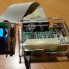
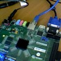
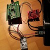
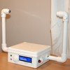
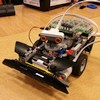

Karol Leszczyński
Follow me on
GitHub
Hello!
This site contains my projects:
2016
 RPi Vibration Measurement (W.I.P.)
 Zynq FPGA - Median Filter
 Barometer - STM32
2015
 Ultrasonic Anemometer
 Obstacle Avoiding Robot - RoboCORE
2013
2D Nbody Gravity Simulator
 2D Nbody Gravity Simulator
2D Nbody Gravity Simulator